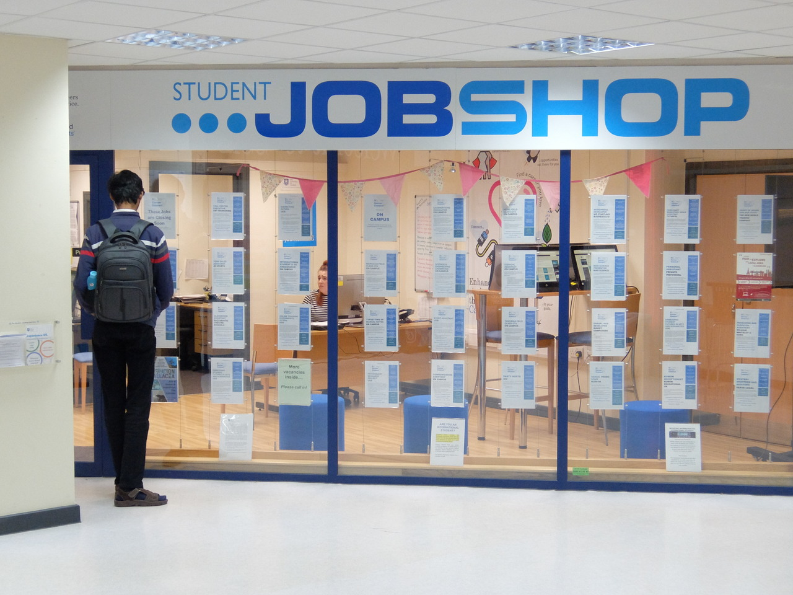

Support
Support services in the Students' Union
It's no secret that The University of Sheffield has one of the best Students' Unions in the country and they have the support services to prove it.
Student Services Information Desk (SSiD)
If you have any university related enquiries then this is the first place to go. They can help with anyting from council tax to exam help. Even if your problem is just you not being able to find your lecture, this is the place to go.
Student Advice Centre
The Student Advice Centre is there for students who need general advice about anything: whether it is about housing or problems with your personal life, the Student Advice Centre is there to provide support and help direct students to the appropriate people if needed.
Job Shop
The Job Shop is there to help Students find part-time jobs alongside studying. Along with helping students find jobs, they are also there for if students feel as though something isn't right at work and can help with your job related issues. They have a job website here with information about jobs in the Sheffield area and about any events.
Smart Move Sheffield
The SU's very own lettings agency - they will help you and your friends to find accommodation in the private sector if you choose to move out of halls after first year (mind you, the University also offers a really good deal for people wanting to stay on - keep an eye out for their Early Bird offers!) You can view their range of approved properties here.
Finance Office
Located on the 6th floor of the Students' Union, the finance office is there to help you with any finance related problems you may be having. If you're having issues with Student Finance, questions about bursaries or any general finance questions, the team here will be happy to help you!